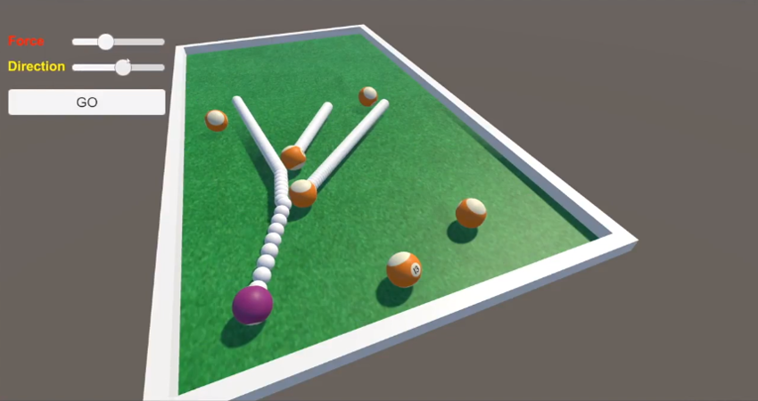

You can use multiple physics ScenesA Scene contains the environments and menus of your game. Think of each unique Scene file as a unique level. In each Scene, you place your environments, obstacles, and decorations, essentially designing and building your game in pieces. More info See in Glossary to manage or work around complex physics contexts. In particular, you can create and set up independent Scenes with physics properties that are different from those of the main scene.

Example: trajectory prediction
Use case examples
You can instantiate multiple physics Scenes based on the main Scene in order to predict GameObjectThe fundamental object in Unity scenes, which can represent characters, props, scenery, cameras, waypoints, and more. A GameObject’s functionality is defined by the Components attached to it. More info See in GlossarycollisionsA collision occurs when the physics engine detects that the colliders of two GameObjects make contact or overlap, when at least one has a Rigidbody component and is in motion. More info See in Glossary and trajectories (as depicted above).
You can isolate a very detailed character in its own physics Scene to more easily filter its collisions with elements of other physics Scenes.
You can create pre-populated physics Scenes to be able to entirely destroy and reload them in order to improve determinism in your physics environment.
Creating and using independent physics Scenes
You can use Multi-Scene editing to create multiple Scenes in general (although you can also instantiate them by script). However, you have to use the Unity scripting API to use independent physics Scenes in runtime.
More precisely, to get the expected physics results, you must write a script that takes care at least of the following tasks for each separate physics Scene:
Load the Scene so that it’s independent from the main Scene.
Get the Scene physics to set up the physics properties that you want to make different from the main Scene.
Enable the Scene’s physics simulation – as it cannot auto-simulate.